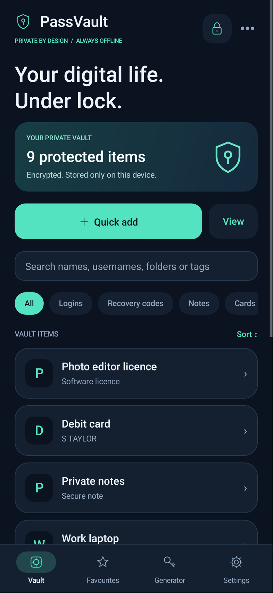
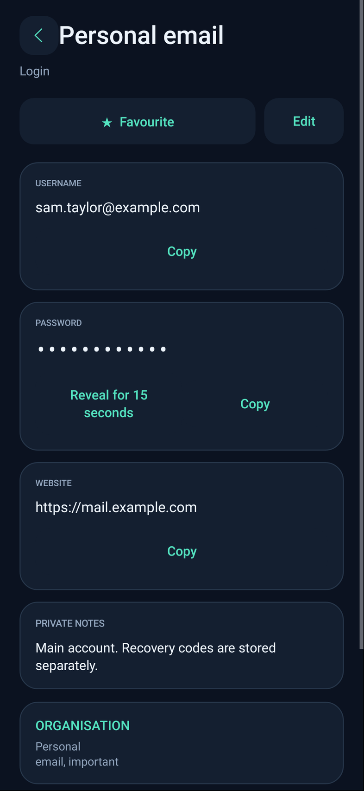
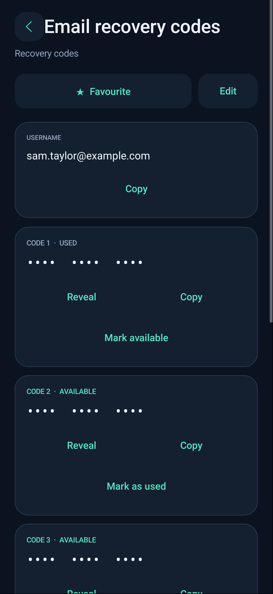
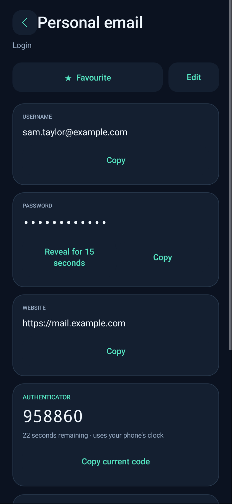
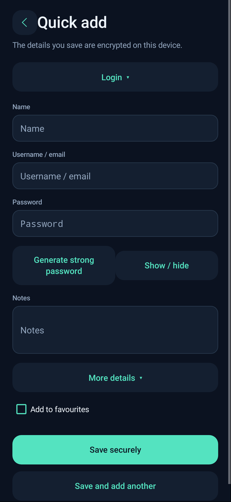
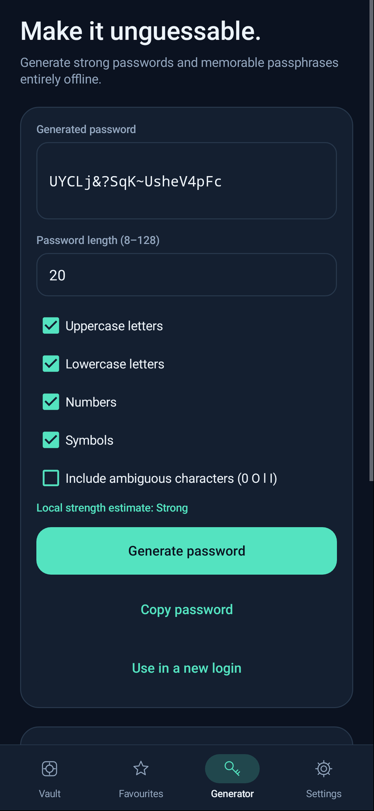
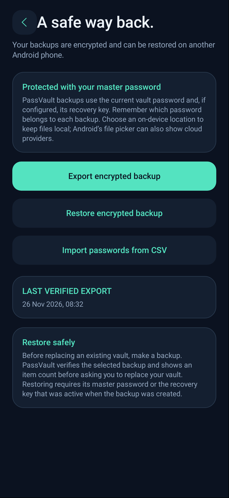
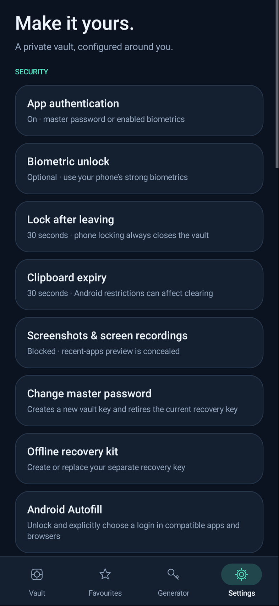
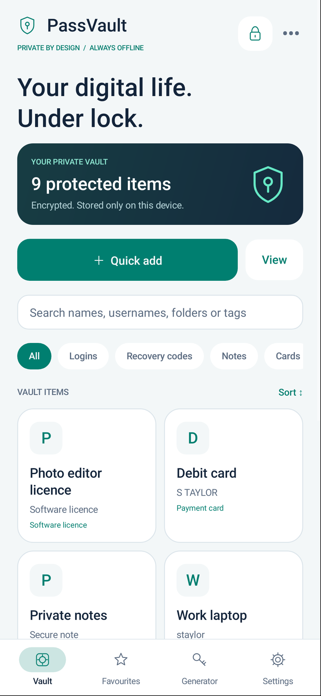
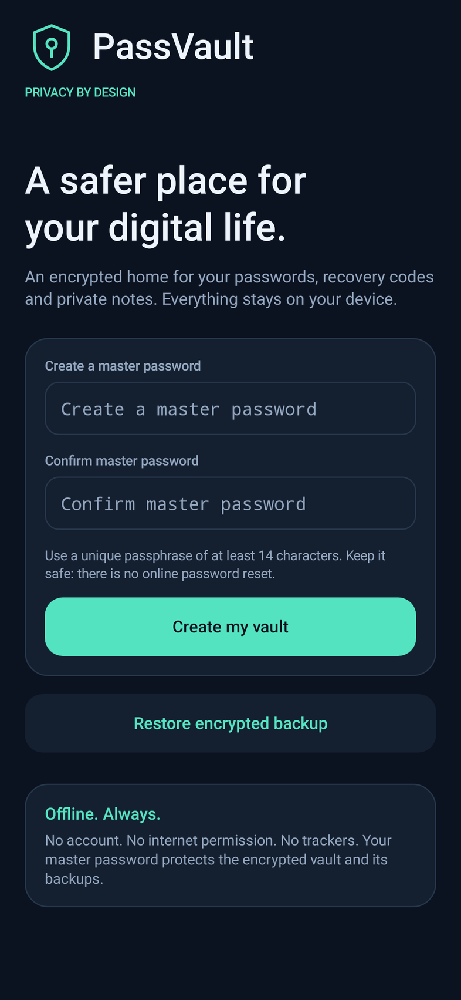

Your passwords. Your phone. Nobody else's.
PassVault keeps every password, recovery code, private note, card and Wi-Fi key in one vault, locked with modern encryption and kept only on your phone.
It is free, with no adverts, no account and nothing to unlock. The app has no permission to go online, so your vault can't be uploaded, synced or leaked from a server.
Download for AndroidHow to install
- Version 1.0.2
- Android 11 or later
- 554 KB
Free, with nothing to unlock. No adverts, no account with the developer, no tracking. Compare or read the release notes.
Chrome may say the file might be harmful. It shows this for app files that do not come from Google Play. Choose Download anyway.

- No internetThe app has no permission to go online.
- No accountNothing to sign up for, nothing to sign in to.
- EncryptedAES-256 with an Argon2id master password.
- No advertsNone in the app and none on this site.
A look inside
These are the real screens, drawn from the app's own code with made-up entries. Swipe or scroll sideways to see them all.









How it works
One master password opens the vault. Nothing ever leaves your phone unless you export it.
Create your vault
Choose a master passphrase of at least 14 characters, and make a recovery key to keep somewhere safe, away from the phone.
Fill it up
Add logins, recovery codes, notes, cards, Wi-Fi and licence keys, or import a CSV from Chrome, Firefox, Bitwarden or KeePass.
Use it anywhere
Unlock with your password or fingerprint, then copy, or let Android's autofill put the login straight into apps and websites.
Everything is in, and all of it is free
Nothing below is held back for a paid tier, because there is no paid tier.
Your vault
- Six kinds of item
- Logins, recovery codes, secure notes, payment cards, Wi-Fi networks and software licences, each with the fields it needs.
- Favourites, folders and tags
- Star what you use most, file items in folders, tag them, and search names, usernames, folders and tags.
- Recovery codes done properly
- Each code is revealed and copied on its own, and marked used when you use it, so you always know how many are left.
- History and trash
- Previous passwords are kept, encrypted, and deleted items wait in the trash for the time you choose.
Passwords
- Strong password generator
- Up to 128 characters, with the character groups you choose and ambiguous characters left out unless you want them.
- Memorable passphrases
- Four to ten random words from the EFF's 7,776-word list, picked with the phone's secure random generator.
- Vault health
- Finds weak, reused, incomplete and year-old logins, all checked on the phone.
Signing in
- Android autofill
- Fills logins in apps and supported browsers after you unlock and choose the login. Websites must match exactly, and apps are pinned to their signing identity.
- Offline authenticator
- Optional two-step codes from a secret or a QR code picture, made on the phone with no camera permission.
- Clipboard that clears itself
- Copied secrets are marked sensitive and cleared after 15, 30 or 60 seconds, where Android allows.
Locking
- Master password with Argon2id
- Your password is stretched with Argon2id using 64 MB of memory, so guessing it from a stolen file is slow and costly.
- Fingerprint or face
- Unlock with your phone's strong biometrics, with the key held by Android's secure hardware.
- Locks itself
- When the screen goes off, and after you leave the app for the time you choose. Screenshots and the recent-apps preview are blocked by default.
Backups and moving phones
- Encrypted backups
- Export the whole vault as one encrypted file, saved where you choose and read back to check every byte.
- Restore anywhere
- Restore on a new phone with the backup's password or its recovery key, after a preview of what it holds.
- Bring your passwords in
- Import CSV exports from Chrome, Google Password Manager, Firefox, Bitwarden, KeePass and others.
Make it yours
- Three themes
- Midnight, Light and AMOLED black.
- Three layouts
- Comfortable list, compact list or two-column cards.
- Easy to read
- Follows your phone's font size, with larger text, reduced motion and haptics switches of its own.
A vault that can't leak from a server
No internet at all
PassVault does not have Android's internet permission. It cannot upload your vault, sync it or be reached from outside.
Encrypted on the phone
The whole vault is encrypted with AES-256-GCM under a random key, which only your master password, your recovery key or your phone's secure hardware can open.
No account, no tracking
There is nothing to sign up for. No analytics, no crash reports, no adverts and no remote logging.
Installing and updating
PassVault is not on Google Play, so your phone asks a couple of extra questions the first time.
Download the app file
Tap Download on your phone. The file is called PassVault.apk and is about 554 KB. If Chrome says the file might be harmful, choose Download anyway.
Allow the install
Open the file. The first time, Android asks you to allow your browser to install apps. Allow it, go back and tap Install. If Google Play Protect steps in, choose More details, then Install anyway.
Updating later
PassVault never goes online, so it cannot check for updates itself. Settings, Check for a newer version opens the release page in your browser: install the new file over the old one and your vault is kept. Never uninstall first, because uninstalling deletes the vault.
Version 1.0.2, released 26 November 2026. See the release notes, or check your download.
Questions
Is PassVault really free?
Yes. There is no paid version, no subscription, no trial and no adverts, and nothing in the app is locked.
Is it on Google Play?
No. PassVault is a personal project and is downloaded from this site as an Android app file. It needs Android 11 or later.
Does it need the internet?
No. The app does not ask Android for internet access at all, so it cannot go online. The website, newer-version and More apps links in Settings open in your own browser.
What if I forget my master password?
Nobody can reset it, because it never leaves your phone. That is why PassVault asks you to make a recovery key when you set up the vault: write it down and keep it away from the phone. With it you can open the vault and choose a new password.
Can I use it on two phones?
There is no syncing, because nothing goes online. Move the vault to a new phone with an encrypted backup, or keep a backup on each.
How do I move my passwords in?
Export a CSV file from Chrome, Google Password Manager, Firefox, Bitwarden or KeePass, then choose Backup, restore and import, Import passwords from CSV. Delete the CSV afterwards: it is readable by anyone.
Will autofill work in my browser?
Autofill works in Chrome, Samsung Internet, Firefox, Edge, Brave and DuckDuckGo when the site gives Android its web address, and in apps you link to a login. Some forms don't work with Android autofill; copy and paste always does.
How do I update it?
Download the new file from this site and install it over the old one. Never uninstall first: uninstalling deletes the vault. Export a backup before updating, to be safe.
Has it been security audited?
Not by an independent firm. It uses standard, well-tested building blocks (AES-256-GCM, Argon2id, Android Keystore) and is checked by over 1,200 automated tests, but no app can protect secrets on a phone that has been compromised.
Who made it?
PassVault is made by Jonathan Jackson, an independent developer in the United Kingdom. It is not connected with Bitwarden, 1Password, Google or any other company.
Your passwords. Your phone. Nobody else's.
Free, with no adverts and nothing to unlock. Made by the developer of several other free Android apps: see them all.